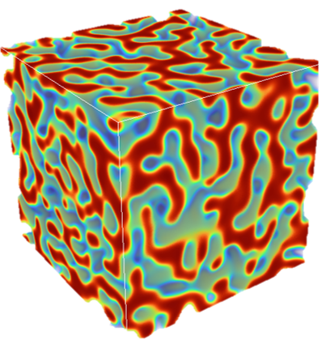

Microstructure Modeling and Data-Driven Materials Design Lab
Department of Mechanical Engineering, Wayne State University

Our lab advances materials for energy and extreme environments by decoding
how microstructure governs properties and by unraveling the
Processing–Microstructure–Property relationship. We build multiphysics
computational tools and digital twins that capture how microstructures form, evolve,
and degrade under operating conditions, and provide guidance for materials design.
News
Oct 2025: We are recruiting two PhD students in computational materials / microstructure modeling.
Oct 2025: Microstructure Modeling and Data-Driven Materials Design Lab is established!
Research Themes
Microstructure Modeling of Structural & Energy materials
Defect Engineering in Extreme Environments
Data-Driven Exploration of Microstructure-Property Relationship
PI
Dr. Longsheng Feng
Assistant Professor, Wayne State University
longsheng.feng@wayne.edu